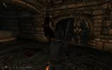
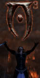
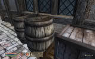

MODS
FCOM: Convergence
Francesco + WarCry + Oscuro + Martigen
FCOM: Convergence shatters previous barriers in the Oblivion mod community by letting you play four of the largest Oblivion "overhaul" mods at the same time -- Oscuro's Oblivion Overhaul, Martigen's Monster Mod, Oblivion WarCry, and Francesco's Leveled Creatures-Items. It also seeks to show how new item and/or creature expansion mods can be added directly to this environment, and thus includes direct support for Bob's Armory. Previously known as FranOOOMMM, the project is still in beta testing but getting very close to a final release.
Oscuro's Overhaul
Sotobrastos' classic OOO updated and improved.
Working with MadCat221, MiSP, and numerous other contributors, we have continued to add improvements and bug fixes to Oscuro's Oblivion Overhaul -- the award-winning masterpiece created by Jorge Salgado (Sotobrastos). The latest updates include professional-quality installers (standalone EXE and OMOD), vastly revamped documentation, and much more.
Updated for OOO 1.33 release!
devakm Mods
My released mod work so far. Nothing really spectacular yet, but not a bad start.
Most of the mods I've released are small tweaks or fixes. The notable exceptions are TES4Gecko, which is a significant update of one of the best tools available for mod-creators, and FCOM: Convergence, which broke significant new ground in the Oblivion mod community by letting you play four of the largest Oblivion "overhaul" mods at the same time (it's still a beta release and work-in-progress).
Roof Textures
Unofficial Add-On for Qarl's Texture Pack 2

This is a small texture replacement mod that acts as an unofficial add-on for Qarl's Texture Pack 2. It replaces the two very blurry 256x256 Bethesda textures (and normal maps) for rusty metal roofs in Skingrad that Qarl did not replace in his outstanding mod. The new roof textures are 1024x1024 and match Qarl's rusty metal trim texture.
QNMR2
Qarl Normal Maps Reduced (QNMR): Unofficial Add-On for Qarl's Texture Pack 2

This is a texture replacement mod that acts as an unofficial option pack for Qarl's Texture Pack 2 (QTP2). It replaces all of the high-res normal maps from QTP2 with dramatically smaller normal maps. The normal maps are reduced to one quarter of their original size, which can significantly help reduce stuttering on 256Mb video cards with almost no loss of quality that you can see in-game.
devakm blog
My research, reviews, opinions, etc.
My blog site is where I post updates about what I'm working on. It also includes copies of my research into ArchiveInvalidation problems, my Old-Timer's Review of Oblivion, my opinions on the ESRB, etc.
MOD GUIDES
These guides are intended to help you get the most out of your mod-playing experience. They are frequently updated with new information on the latest releases, etc.
Quest List
The Oblivion Quest List (TOQL): The Ultimate Guide to Quest Mods for TES IV
The Oblivion Quest List (TOQL) is intended to be a comprehensive guide to good quest mods for TES IV: Oblivion. It is a community project, in the sense that all of the mods listed here have been recommended by members of the mod community. Good quest mods are critical to the future of Oblivion modding, because without them people quickly get bored with plundering random dungeons, no matter how great the "eye candy" is.
Texture Overhaul
The Oblivion Texture Overhaul (TOTO): The Ultimate Visual Experience for TES IV
The Oblivion Texture Overhaul (TOTO) is not a mod itself, but rather a guide to a lot of great mods that improve the appearance of The Elder Scrolls IV: Oblivion. TOTO is an ongoing community project to create a resource guide that includes comparison screenshots, installation instructions, download mirror listings, etc.
Oblivion Mods FAQ
The definitive guide to using mods for Oblivion
This was my first major project for Oblivion and it has grown over time to become the definitive guide to using mods for Oblivion. It is the only fan-controlled topic pinned on the official Oblivion mods forum, and various versions of it are featured prominently on at least five separate web sites, including a German translation. I constantly keep all the different versions of it up to date, but my favorite version is on the CS Wiki since it's the easiest one to read, so that's the one I'm linking to here.
De-Isolation Tutorial
In the early days of Oblivion modding, we couldn't figure out how to make plugins communicate with each other without requiring a common master file. This was known as "mod isolation" (a term coined by Wrye). More than a year later, both ParasiteX and Wrye discovered how to get around this problem. I quickly started exploiting their discoveries in FranOOOMMM (which later evolved into FCOM). This tutorial grew out of my early experiences working with de-isolation (using a hex editor and TES4Gecko). It was the first crude guide to overcoming isolation problems and has evolved over time into a more polished overview of how to use the latest fan-made tools (such as TES4Edit and Wrye Bash) to create de-isolated plugins.
ArchiveInvalidation
Research, solutions, and workarounds for one of the most annoying bugs in Oblivion.
This was the result of a massive community research project. It includes details on the texture replacement bug in Oblivion and the best solutions to the problem so far. If you want an easier read, however, most of this information is summarized in the Oblivion Mods FAQ.
TES IV Gotchas
Troubleshooting common mistakes and obscure problems for Oblivion.
This is a collection of short tips by numerous contributors on troubleshooting TES IV problems -- gotchas, common mistakes, CS bugs, etc. The basic ideas and topics were originally discussed and peer-reviewed in a BGS Forums thread starting back in February 2007, eventually resulting in a Troubleshooting category on the CS Wiki. There's already a ton of great info collected there, and the knowledgebase is still being expanded on by multiple contributors.